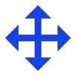
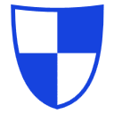
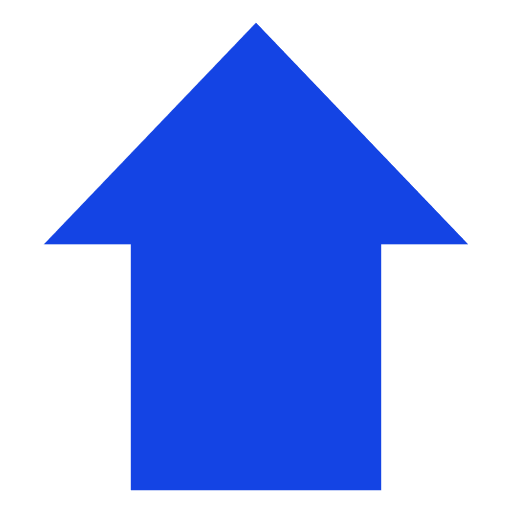

Para jugar una partida de Hitchfields se requiere de 4 Mazos: el mazo de Sucesos, la del Desafiante, la del Observador
y el Stack de Inicio.
-
Mazo de Sucesos: Este mazo se distribuye en forma de mapa y es donde el jugador se moverá para progresar. Se pueden encontrar tres
tipos de cartas: Eventos (sucesos importantes que siguen un curso fijo), Encrucijadas (situaciones complicadas donde el jugador puede apostar a la suerte),
Almacenamiento (el jugador puede curarse o guardar cartas) e Investigación (aquí el jugador puede conseguir más cartas para su Stack y encontrar
criaturas).

-
Mazo del Desafiante: Contiene cartas del Desafiante que se distribuyen boca abajo al entrar a un Suceso de Investigación y se pueden agregar al Stack.
Son la mejor forma de conseguir herramientas para sobrevivir durante un encuentro. Cada carta del Desafiante tiene un costo de 
y están divididos en dos grupos: Acciones y Artefactos.

-
Mazo del Observador: Contiene cartas de Criatura, Presagios e Interruptores que se distribuyen boca abajo al entrar a un Suceso de Investigación. Estas cartas pueden cambiar de forma
significativa el juego, para bien o para mal y pueden representar un riesgo si el jugador no está preparado. Escoge cuidadosamente.

-
Stack: Cada personaje cuenta con un Mazo de inicio llamadO Stack, que se puede modificar durante un Suceso de Investigación o en un Suceso de Almacenamiento.
El Stack sólo puede contener Acciones y Artefactos. El límite de cartas que puede tener tu Stack es 30.
Otra carta importante es la carta de Personaje, donde se calcula la salud ,
la defensa  y la energía del jugador, así como los puntos de mejora
.

-
Pila de Cartas Especiales: Esta pila se reserva para cartas externas a los mazos y que son usadas cuando una carta así lo requiere. En la pila se guardan las siguientes cartas:
- Carta de Salida
- Cartas de Pista
- Cartas de Estado
- Cartas de Criatura Némesis
- Cartas especificadas dentro de las cartas de Suceso

Cartas del Desafiante
Las cartas del Desafiante se usan para sobrevivir durante un Encuentro, siempre que tengas la suficiente para poder usar esas cartas. A continuación se detallan las partes de cada una de estas cartas y
cómo puedes identificarlas:

 Nombre de la carta: No hay límite en el número de cartas del mismo nombre que puedes tener en tu Stack.
Nombre de la carta: No hay límite en el número de cartas del mismo nombre que puedes tener en tu Stack.
 Costo de Energía: La es usada para evocar las cartas de Desafiante. Necesitas para jugar la mayoría de tus cartas.
Sin embargo, en este caso esta carta no tiene coste, así que puedes jugarla aún si no tienes ;
Costo de Energía: La es usada para evocar las cartas de Desafiante. Necesitas para jugar la mayoría de tus cartas.
Sin embargo, en este caso esta carta no tiene coste, así que puedes jugarla aún si no tienes ;
 Tipo: Hay dos tipos de cartas de Desafiante, Acciones y Artefactos. Las acciones son cartas de uso inmediato, mientras que los Artefactos son permanentes.
Tipo: Hay dos tipos de cartas de Desafiante, Acciones y Artefactos. Las acciones son cartas de uso inmediato, mientras que los Artefactos son permanentes.
 Caja de Texto: Texto que define cómo va a funcionar la carta. Algunas cartas vienen con explicación de ciertas palabras clave, al fondo de la caja de texto. Para más información sobre las palabras clave, consulta el
Glosario.
Caja de Texto: Texto que define cómo va a funcionar la carta. Algunas cartas vienen con explicación de ciertas palabras clave, al fondo de la caja de texto. Para más información sobre las palabras clave, consulta el
Glosario.

Acciones vs. Artefactos
Las acciones son enviadas a la Pila de Descarte una vez hayan sido activadas, mientras que los Artefactos se quedan dentro de la Zona de Combate hasta que otra carta los remueva.
Generalmente, los Artefactos tienen una condición de activación para activar sus habilidades, como usar más o se activan durante una fase de tu turno.
Al construir tu Stack, ten en cuenta que hay Artefactos tienen sinergia con un tipo específico de Acciones ¡y pueden convertirse en herramientas poderosas para asegurar tu supervivencia!.
Cartas de Criatura
Las cartas de Criatura pertenecen al mazo del Observador e inician un Encuentro en el momento en que son jugadas. A diferencia de las cartas de Desafiante estas las puedes identificar porque su nombre está a la derecha,
seguido de una serie de atributos:

Nombre de la carta: A parte de diferenciar unas criaturas de otras, el nombre sirve como identificador para las habilidades de otras cartas.
Salud base: Una vez que la llega a 0, la criatura es removida del juego.
Radio de Ruido: Cuando una criatura se revela porque el jugador volteó esa carta, se activa el Radio de Ruido. Revela cartas de acuerdo a la dirección que especifican las flechas azules.
Si una criatura fue revelada por el radio, esta también entra al Encuentro.
Experiencia: Cuando una criatura es removida del juego o escapas del Encuentro, esos puntos se suman a la de tu personaje.
 Tipo: Las criaturas que comparten el mismo tipo tienen interacciones y habilidades similares.
Tipo: Las criaturas que comparten el mismo tipo tienen interacciones y habilidades similares.
 Caja de Texto: Texto que define cómo va a funcionar la carta. Algunas cartas vienen con explicación de ciertas palabras clave, al fondo de la caja de texto. Para más información sobre las palabras clave, consulta el
Glosario.
Caja de Texto: Texto que define cómo va a funcionar la carta. Algunas cartas vienen con explicación de ciertas palabras clave, al fondo de la caja de texto. Para más información sobre las palabras clave, consulta el
Glosario.
Orden de activación en habilidades
Las habilidades de cada criatura siguen un orden específico para activarse. A continuación se detallan las tres clases de activación que puedes encontrar:
Habilidad Única: Cada turno en la fase de Reacción, la criatura realiza la habilidad especificada.

Habilidad con Dado: Cada turno en la fase de Reacción, la criatura realiza la habilidad especificada por el resultado del dado.

Habilidad Secuencial: Al empezar el Encuentro, coloca un marcador en la primer casilla . En cada fase de Reacción se activa la habilidad marcada
y al terminar esa fase, se mueve ese marcador hacia la siguiente casilla. Si se acaban las casillas se empieza de nuevo con la primera.

Criaturas Némesis

Las Criaturas Némesis son tarjetas de criatura con orientación horizontal que entran en juego cuando se indica en una tarjeta de Sucesos o cuando se colecciona un número determinado de cartas de Presagio, en ese último caso ese
número varía dependiendo de la carta de Presagio que se tomó. Son enemigos formidables y pueden cambiar tu situación para mal si no estás preparado, ¡por eso debes tener en cuenta cuántas cartas de Presagio llevas al entrar en
un Suceso de Investigación!

Primeros pasos
Para empezar una nueva partida de Hitchfields, toma el mazo de Sucesos y distribuye las cartas boca arriba en el área azul usando el orden especificado en la imagen.
En este ejemplo se sigue el orden de la historia "The Stake Out", pero el orden puede variar de acuerdo a la historia.
Una vez distribuidas las cartas de Sucesos, coloca los Mazos del Observador y del Desafiante en sus respectivas áreas, así como la pila de cartas adicionales.
Finalmente, coloca la carta de Personaje en la sección inferior y deja espacio suficiente para la Zona de Combate, luego coloca el Stack a la derecha y ¡listo!
Con todas los Mazos colocadas, mueve tu avatar  hacia la carta "The Stake Out" y lee la carta, ahora ya puedes desplazarte por el mapa con un movimiento a la vez.
hacia la carta "The Stake Out" y lee la carta, ahora ya puedes desplazarte por el mapa con un movimiento a la vez.
Explorando el mapa
En "The Stake Out", el Detective tiene que investigar el asedio ocurrido en la residencia Durán durante la noche en que los estaba investigando. Explorar los cuartos, exponerse a los horrores que moran
dentro de la residencia y sobrevivir se convierten en una urgencia. Para ello, tienes que mover su avatar por cartas de Sucesos que se activan al pasar ellas por primera vez. Cuando se activa una carta de Sucesos, se voltea el reverso
y se lee el contenido de la carta. En la mayoría de casos, consisten en tomar una o varias decisiones y una vez completadas, se puede proceder hacia el siguiente movimiento.


Sin embargo, en el caso de las cartas de Investigación, cartas del mazo del Desafiante y del mazo del Observador así como la Pila de Cartas Especiales se colocan barajeadas boca abajo en la Zona de Investigación, de acuerdo a lo que especifica
cada carta de Investigación. En ese momento, eres obligado a adivinar qué carta es tu siguiente mejor opción, como si tuvieras una venda en los ojos.

El objetivo inmediato es buscar la carta de Salida, la cuál te permite completar la Zona de Investigación y proceder. Sin embargo, usar esta carta implica dejar las cartas restantes atrás, ya que no podrás volver a activar esa carta
de Investigación por el resto de la partida.

Durante tu búsqueda te encontrarás con cartas de Acción y Artefactos, que puedes agregar a tu Stack o reemplazarlas por otras que ya tienes.

En el caso de que tengas la mala suerte de encontrar una carta de Criatura, su Radio de Ruido se activa y revela las cartas que entren dentro de su radio.
Posteriormente, se inicia un Encuentro con esa criatura y todas las criaturas que reveló.
Enfrentando criaturas

Al iniciar un Encuentro, el jugador se pasa a la zona de Combate. Ahí coloca (de izquierda a derecha) la carta de Personaje, todas las cartas de Criatura que reveló y tu Stack, el cual debe
barajear antes de poder continuar. Los Encuentros son combates por turno, y cada turno tiene sus fases con interacciones propias para el jugador y las criaturas.
Fases del turno
Las fases de un turno son cuatro: Fase de Robo, Fase de Mantenimiento, Fase de Acción y Fase de Reacción. Es importante recordar el orden y la estructura de cada fase, no sólo para saber qué acciones
podrás realizar sino también para las habilidades que se activan específicamente en esas fases. A continuación se describen a detalle cada una de estas:
- Fase de Robo: Toma 5 cartas de la parte superior de tu Stack y añadelas a tu mano. Si robas una carta de Estado, sus efectos se aplican en ese momento.
- Fase de Mantenimiento: Las cartas de Criatura declaran la habilidad que van a ejecutar en la Fase de Reacción. En esta fase también se activan las habilidades de cartas
que mencionan "Al inicio de tu Fase de Mantenimiento,...".
- Fase de Acción: Durante esta fase, el jugador puede jugar las cartas de su mano y colocarlas en la Zona de Combate. Todas las cartas de Acción que se usen y las criaturas y los Artefactos que se
remuevan son enviados a la Pila de Descarte. Todas las cartas que tienes en tu mano son descartadas al terminar esta fase.
- Fase de Reacción: Esta es la fase de la Criaturas, es aquí cuando realizan las habilidades que declararon durante la fase de Mantenimiento. Al terminar esta fase, se considera el fin de este turno.